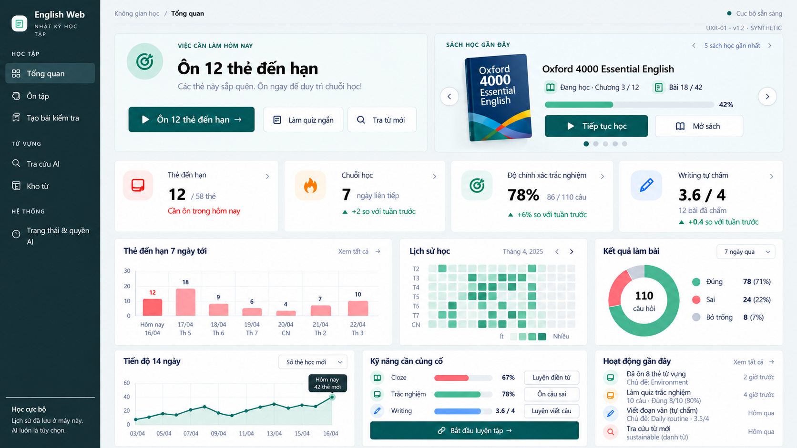
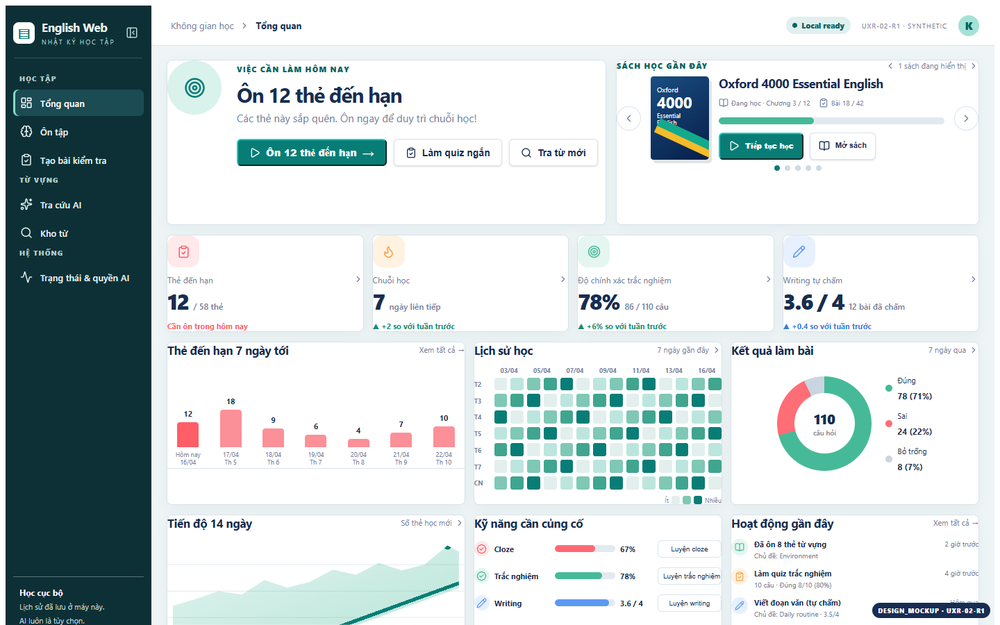
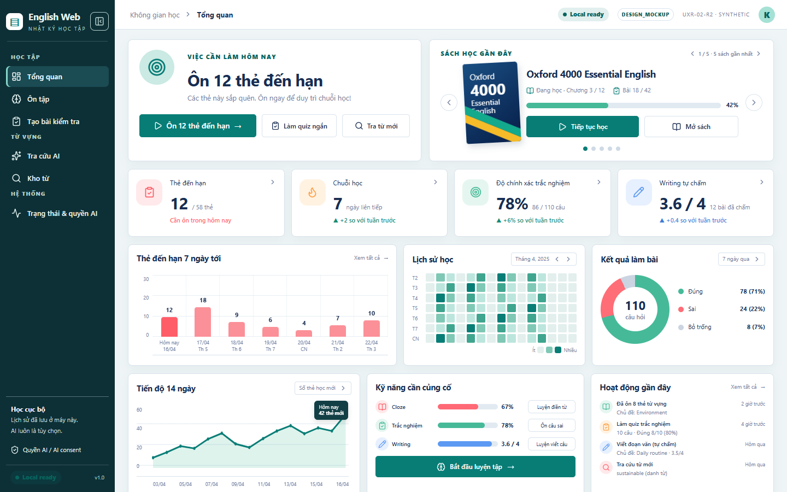
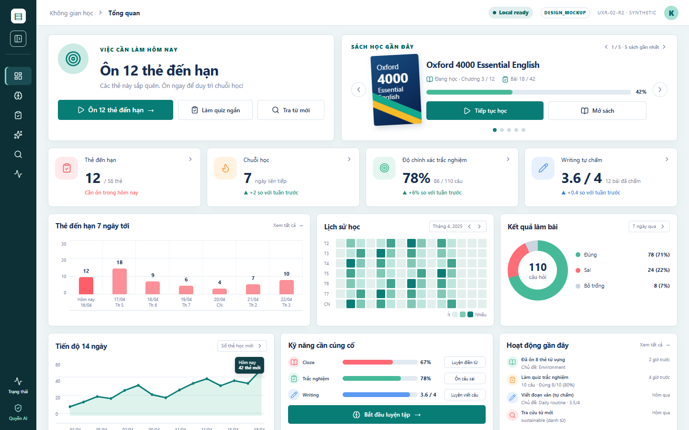
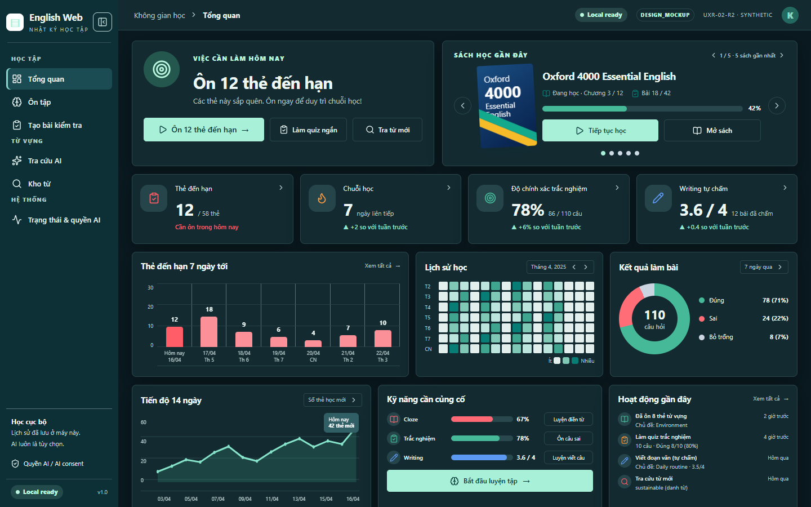
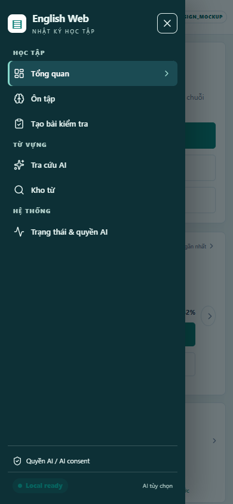
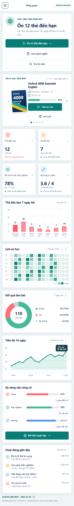

Locked owner reference · dashboard-overview.png · 1672×941
PRIMARY VISUAL CONTRACT

Prior R1 primary
DESIGN_MOCKUP · preserved for comparison

R2 corrected primary · 1440×900
DESIGN_MOCKUP · row proportions, KPI anatomy, chart detail

R2 collapsed rail · 1440×900
DESIGN_MOCKUP · reopen, /status and /status#ai-consent paths labeled

R2 dark candidate · 1440×900
DESIGN_MOCKUP · mint primary CTA and readable chart accents

R2 mobile drawer open · 390×844
DESIGN_MOCKUP · same dashboard hierarchy, status/consent access

R2 mobile full page · 390 CSS px
DESIGN_MOCKUP · full-page proof of rows 1–4 and disclosure below content